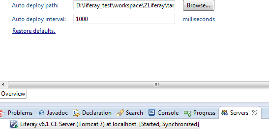

Debugging your application
HomeApplication Auto Deploy
By default, Liferay has a very interesting feature: it contains several classes that implement com.liferay.portal.kernel.deploy.auto.AutoDeployListener, which are used to process the auto deployment of wars.
The directory used to scan for layout templates, portlets and themes to auto deploy is defined in the ${liferay.home}/portal-ide.properties file:
Default value is ${liferay.home}/deploy, but you could use instead the target directory of your project. This way, by building your application, the generated war will be automatically deployed (if your liferay application server is started, of course).
WARNING: if you start your application server in Eclipse (with the Servers view), you have to set this value in your IDE (double click on the server, and edit the Auto deploy path value. Every time you launch the server with Eclipse, it generates a new portal-ide.properties file which overrides the one in your ${liferay.home} directory.

Debugging your application
In order to debug your application, you only have to launch your application server in Eclipse in debug mode (Servers view, right click on the server, and Debug).
You do not have to stop/launch the server every time you make a modification in your code. Just build your project, and Liferay will redeploy it automatically.